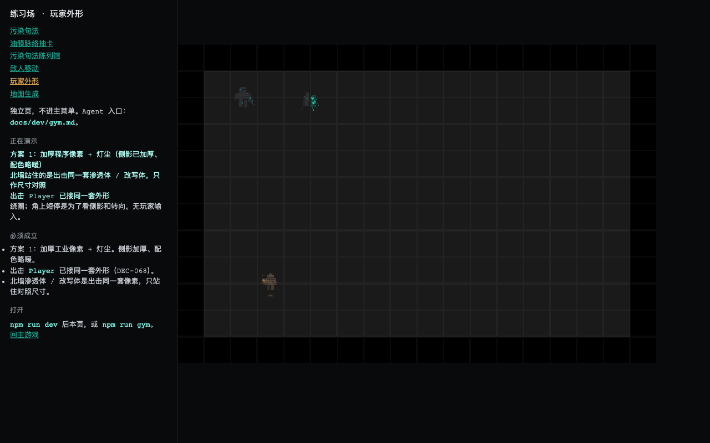
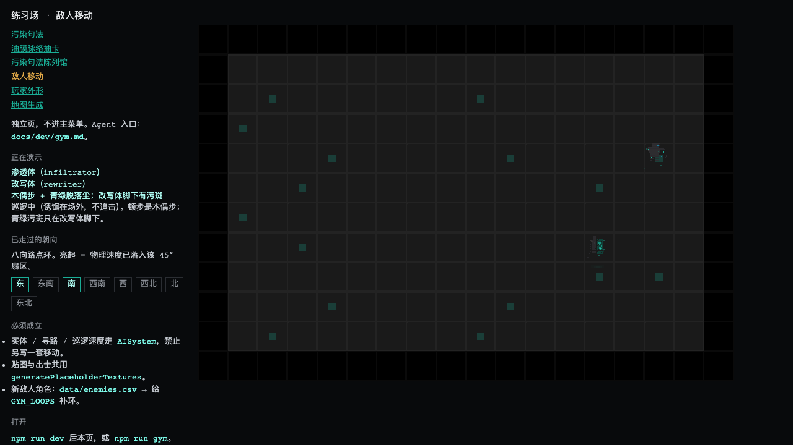
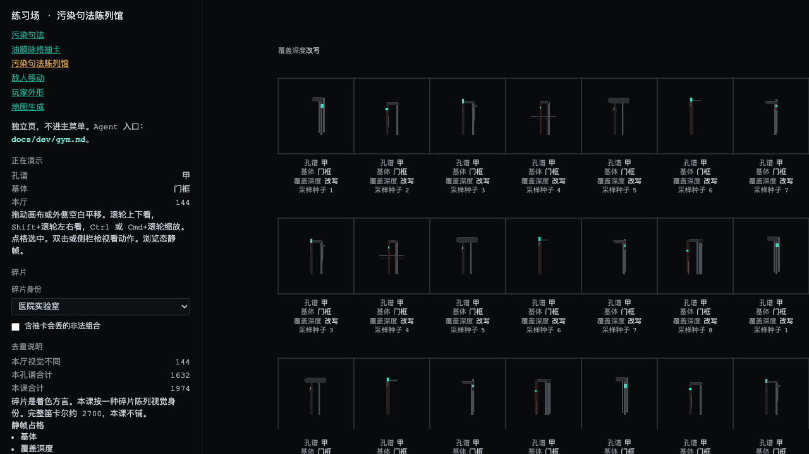
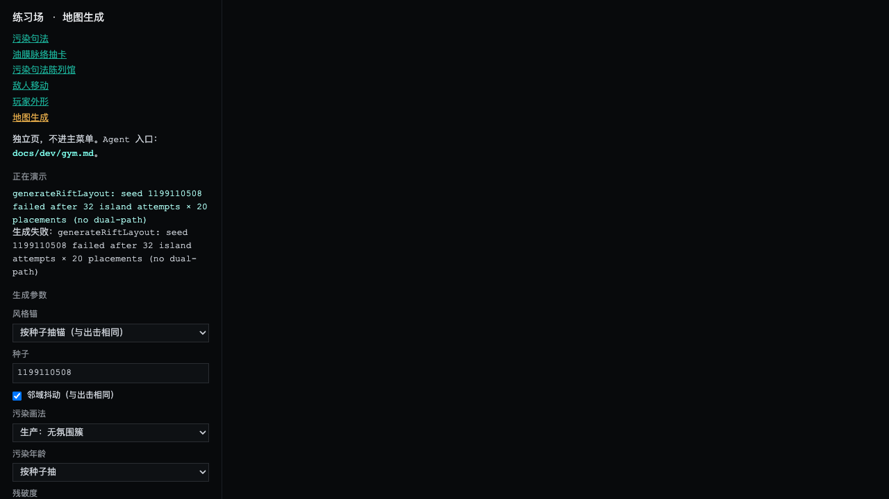
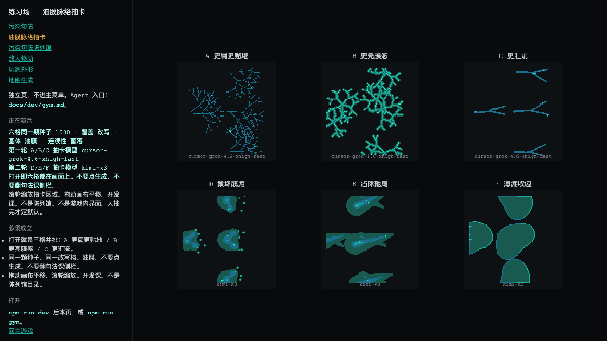

lesson=player
lesson=enemies
lesson=lexicon-gallery
lesson=map
rift-fragment-surfaces.md）failed after 32 island attempts × 20 placements (no dual-path)。画布区域完全空白，无法验证地面纹理、占漆分布、碎片身份表达等核心视觉效果。这是一个算法稳定性问题，直接阻断了对整个裂隙地面系统的视觉审核generateRiftLayout: seed 1199110508 failed after 32 island attempts × 20 placements (no dual-path) 生成失败: seed 1199110508 failed after 32 island attempts × 20 placements (no dual-path) 生成参数 风格箱 按种子子锚（与出击相同） 种子 1199110508 ☑ 邻域抖动（写出击相同） 污染换法 生产: 无氛围簇 污染按子抽 按种子子抽 残骸度
lesson=paint-vein-card
| 维度 | 规范要求 | 实际观察 | 判定 |
|---|---|---|---|
| 暖色稀缺性 | 暖色 100% 来自玩家/HUD；裂隙内实体不带暖色（§2.3 规则 8） | 5 个页面中未见非预期暖色泄漏 | PASS |
| 污染色谱 | cyan-teal 光谱内偏移（§2.2 L2），含 contam-cold → contam-white | 敌人/漆脉/画廊均在此光谱内，无越界色相 | PASS |
| 极度压暗 | 底色亮度 < 32；frag-* 最暗格亮度 21–25（§2.2 L1 注） | 所有页面背景均为近黑（#0d1114 级），符合 | PASS |
| 四层架构 | L1(碎片记忆色) + L2(污染色谱) + L3(玩家暖光) + L4(稀有叙事色) | L3 仅在 player 页出现；L2 在 enemies/gallery/paint 页主导；L1 待地图成功后验证 | PASS |
| UI 色板 | ui-text(#8a8f96) / ui-text-bright(#c8cdd4) / ui-danger(#cc3333)（§2.2 UI色） | 所有页面文本/标签/链接均使用上述色值体系 | PASS |
| 检查项 | 规范要求 | 观察 | 判定 |
|---|---|---|---|
| 污染表达统一性 | 实体的"渲染崩坏"和地面青绿占漆是同一种现象的不同尺度（同一份 ramp） | 敌人 teal 方块 vs 画廊 teal 形态 vs 漆脉 teal 网络 —— 三者都是"青绿色异常信号"，语言一致 | PASS |
| 浓度递进连续性 | 轻度→标准→重度之间只调参数（占漆只数/色相滑动/材质残影），不切换表达方式 | 从 gallery 的轻度变异到 paint-vein-card 的重度覆盖，呈现参数调节趋势 | PASS |
| 区域差异表达 | 靠渍色/纹理语法/墙结构/地物尺度承担，不靠底色色温或污染色相（§1.1 改写条） | 地图页生成失败无法验证；gallery 页碎片参数面板存在但效果待验证 | N/A |
| 规格 | 要求（§3） | 实际 | 判定 |
|---|---|---|---|
| Tile 尺寸 | 32×32 px | 练习场网格对齐 32px（player/enemies 页网格可见） | PASS |
| pixelArt 缩放 | nearest-neighbor（pixelArt: true） | 像素边缘锐利，无双线性模糊痕迹 | PASS |
| 画布比例 | 960×640 px（3:2） | 各页面画布比例一致 | PASS |
| GameObject.rotation | 恒为 0；转向靠换贴图（actor-pixels.md 闸门 1） | 静态截图无法验证运行时 rotation 值，需代码审查 | 待验 |
| # | 问题 | 页面 | 规范引用 | 说明 |
|---|---|---|---|---|
| P0-1 | 敌人渲染为方块而非密像素人形 | enemies | §5.2 / actor-pixels.md |
渗透体应读为"第一眼像人但不对劲"（臂过长/肩不对称/前倾猎食/轮廓缺损），当前是纯几何方块。 可能原因：(a) 显示的是 placeholder fallback (b) infiltrator-sprite.ts 程序绘制结果未达规范密度 (c) sprite 未正确挂接到 Enemy 实体📸 见 图 2.1 — 场景中 ~12 个 teal 小方块 + 右下角 1 个稍大色块 |
| P0-2 | 地图生成失败 | map | §4.2 / rift-fragment-surfaces.md |
failed after 32 island attempts × 20 placements (no dual-path)画布完全空白，无法验证：地面纹理、有主占漆分布、碎片身份表达（渍色/纹理/墙结构）、L1 底色色温、浓度梯度视觉 📸 见 图 4.1 — 右侧区域仅显示错误日志 |
| # | 问题 | 页面 | 规范引用 | 说明 |
|---|---|---|---|---|
| P1-1 | 玩家"加厚"感不足 | player | §5.1 / DEC-068 |
体量填充率偏保守。规范要求"侧影加厚使体量能与 32×32 渗透体并排"，当前 sprite 在暗底上显得单薄。需人终审。 📸 见 图 1.1 |
| P1-2 | 灯尘动态效果不可见 | player | §5.1 分层表 |
静态截图中无法分辨"暖灯尘上飘"粒子效果。建议用录屏或长曝光方式验证亮度/尺寸/速度参数。 📸 见 图 1.1 |
| P1-3 | 画廊形态个体差异过微 | lexicon-gallery | §1.1 Degree not Kind |
不同采样种子之间视觉差异主要在 teal 高亮点位置的微调。若设计意图是"显著个体差异"则不足；若是"参数微调"则合理。需明确设计意图。 📸 见 图 3.1 |
| P1-4 | 地图空状态 UX | map | — | 生成失败时仅显示原始日志文本，缺少用户友好的提示/建议操作/可视化反馈。 📸 见 图 4.1 |
| P1-5 | GameObject.rotation 待验 | 全局 | actor-pixels.md 闸门 1 |
静态截图无法验证。规范要求 rotation 恒为 0，转向靠换贴图。需代码审查 enemy-factory.ts / player 移动逻辑确认。 |
| # | 问题 | 页面 | 规范引用 | 说明 |
|---|---|---|---|---|
| P2-1 | 漆脉跨模型风格差异 | paint-vein-card | §8.1 A类资产 |
A/B/C 用 cursor-grok（几何分形），D/E/F 用 kimi-k1（有机团块）。输出风格不一致，若用于同一游戏需统一后处理管线。 📸 见 图 5.1 |
infiltrator-sprite.ts / rewriter-sprite.ts 是否被正确调用 → 修复至达到"第一眼像人"标准